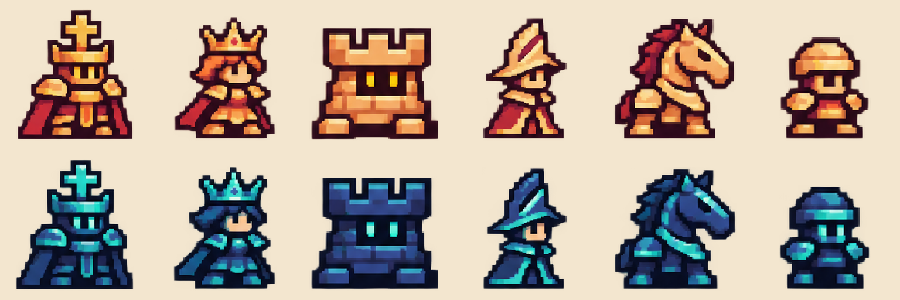
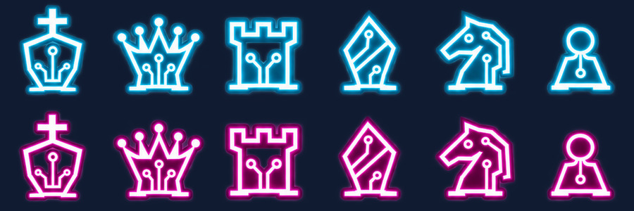
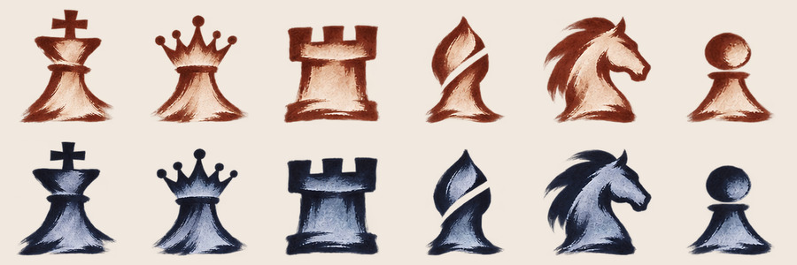
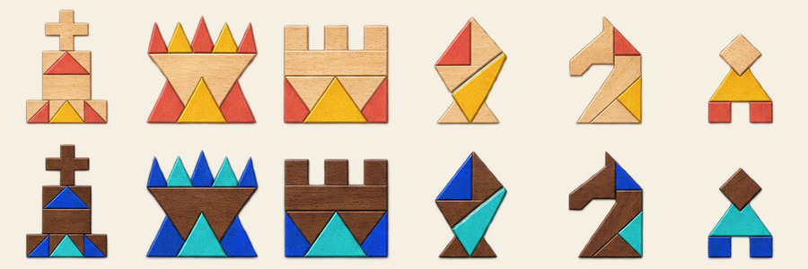
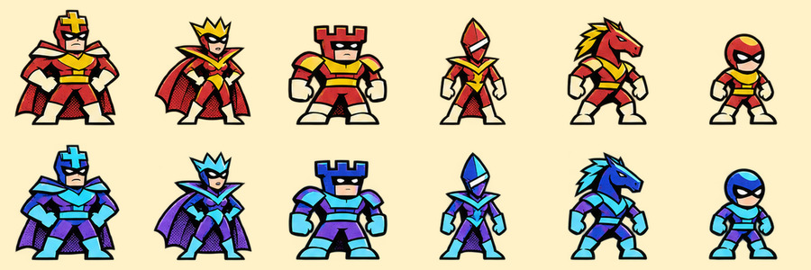

픽셀 · 네온 선화 · 수묵 붓그림 · 탱그램 · 팝아트백·흑 12종 × 기본·공격·피격 3포즈 · 모두 무료 · 기본 스킨은 로열 클래식
각진 픽셀과 제한된 색의 레트로 게임

속이 비치는 발광 회로와 기하학 선

붓자국과 여백이 있는 평면 먹그림

나무 무늬와 도형을 조합한 평면 퍼즐

굵은 검은 윤곽선과 망점 인쇄 만화

공방 미리보기에는 백·흑 각 6종이 모두 표시됩니다. 판을 누르면 12종을 이름과 함께 크게 볼 수 있습니다.체스 앱 열기 → 꾸미기 → 말 · 귀여운 스킨 5종 · 이전 테마 10종